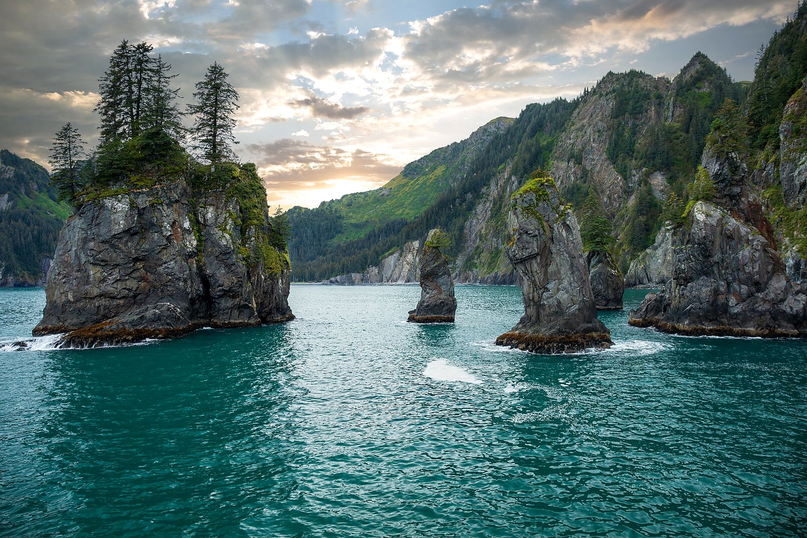
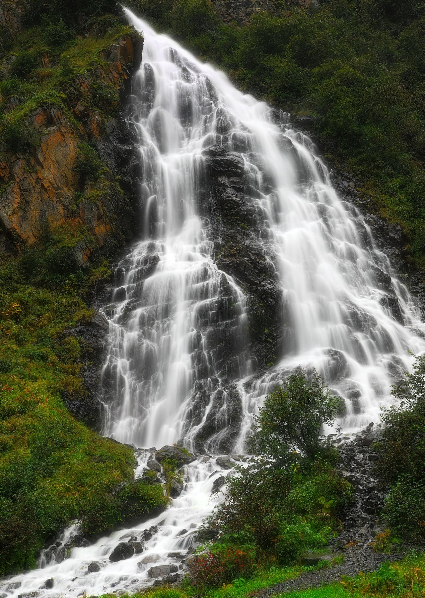

Museum-quality fine art prints from Alaska's most breathtaking wild places — glacial lakes, coastal fjords, mountain highways, and autumn tundra. Available on canvas, metal, acrylic, and framed.
Valdez Glacier Lake · Alaska · © Dan Sproul Photography
Alaska holds a special place in Dan Sproul's portfolio. He has photographed the state extensively — from the dramatic tidewater glaciers of Valdez and the soaring peaks of Denali to the ancient sea stacks of Kenai Fjords and the blazing tundra of autumn. Each visit has produced images that stop people in their tracks.
These are not tourist snapshots. They are patient, deliberate compositions made in the golden light of long Alaskan days — waiting for the fog to lift off a glacier lake, the light to strike a mountainside just so, the moment when water and sky become indistinguishable.
Locations photographed
"Alaska doesn't just inspire — it demands that you pay attention. Every image I've made there required patience, physical effort, and a genuine reverence for the place."
— Dan Sproul, Lima, Ohio
Featured Alaska Prints





These are a selection of Dan's Alaska portfolio. Over 50 Alaska images are available — all printable at large format on museum-quality media.
View Full Alaska Collection ↗Premium cotton, gallery-wrapped. Ready to hang — no framing needed. Beautiful at large sizes.
Archival paper in white, silver, or dark frames. Museum-quality. Wall-ready immediately.
Dye-infused aluminum for vivid, striking color. Waterproof, modern, frameless.
Face-mounted under crystal acrylic. Extraordinary depth and luminosity. Gallery-grade.
Where were these Alaska photographs taken?
Dan has photographed extensively throughout Alaska including Valdez (Glacier Lake and Keystone Canyon), the Kenai Fjords National Park, the Denali Highway through interior Alaska, Seward and Resurrection Bay, and the Wrangell-St. Elias wilderness. He has made multiple extended trips to Alaska over the past decade, shooting in all seasons.
What camera and equipment does Dan use?
Dan shoots with a Canon 5D Mark IV as his primary camera, supported by a Canon 90D and 7D. He uses a range of lenses for different subjects and conditions — wide angles for sweeping landscapes, telephoto for wildlife and compressed mountain scenes, and macro for detail work. All images are captured in RAW and processed to archival standards.
What sizes are Alaska prints available in?
Prints are available from 8×10 inches up to 60×40 inches and larger for canvas and metal. All images are shot at sufficient resolution to print large without quality loss. Custom sizes are available — contact Dan directly for large commercial or hospitality orders.
Do Alaska prints ship worldwide?
Yes. Prints ship to all 50 states and over 21 countries worldwide. Orders are fulfilled through Dan's partner print lab at dansproul.com with full satisfaction guarantee on every order.
Are Alaska prints available for commercial licensing or bulk orders?
Absolutely. Dan works with interior designers, hotels, medical facilities, and corporate clients on large commercial installations. Recent projects include Drury Inn hotels and the Wexner Medical Center at Ohio State University. Contact Dan for trade pricing, licensing, and custom quotes.
Which Alaska print is the most popular?
The Valdez Glacier Lake image — with its ethereal blue water, floating ice, and dramatic mountain backdrop — is consistently Dan's best-selling print both for personal collectors and commercial installations. The Kenai Fjords sea stacks and the Denali Highway black and white are also perennial favorites.
Every Alaska image is available in museum-quality canvas, metal, acrylic, and framed prints.
Ships worldwide · Satisfaction guaranteed · Custom sizing available